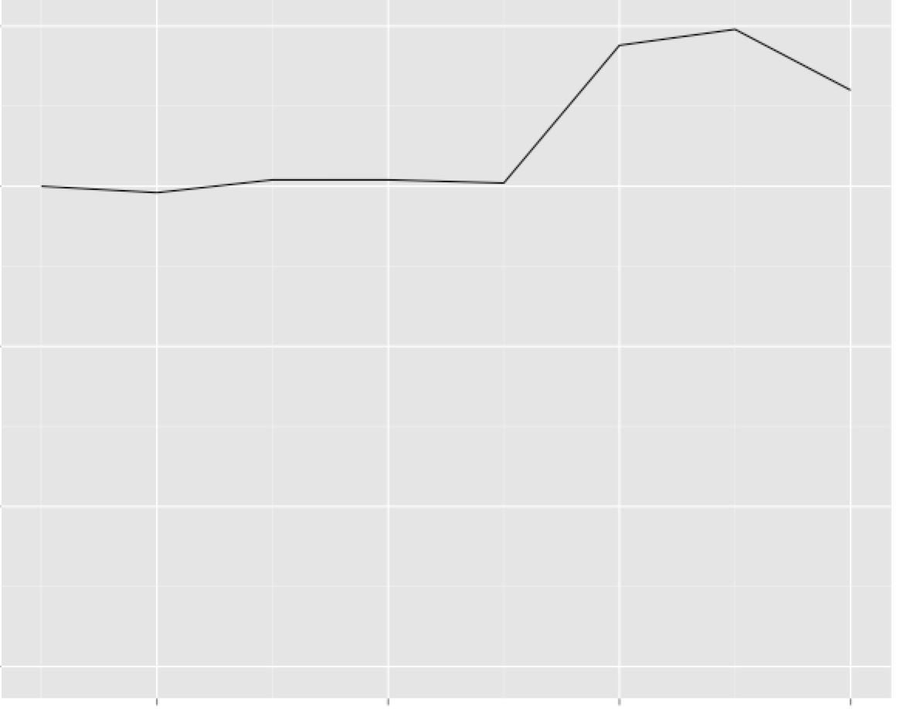

2054-05-24
From the desk of Jai Mila, Data Analyst, Region 15224.
For delivery to Chief Data Scientist Andrew Crendell, Greater Pittsburgh Region.
This report, as required under section 3.4.11 of the FREEDOM Act of 2022, details potentially unamerican activity by the following subject.
Subject is not yet under investigation, so subject's legal name will not be disclosed in this document. The identifier for subject described herein is: RFQ82H, or simply "S" when appropriate.
Officer Crendell, I propose adding subject RFQ82H to the following watch lists: Narcotic Activity Level 1, Unauthorized Body Modification, Intent to Generate Unrest.
From S's location log:
2054-05-21 10:38AM: Bloomfield home, Cedarville Road to Millvale Ruins. Bicycle.
2054-05-21 10:52-11:34AM: Millvale Ruins.
As I'm sure you're well aware, Millvale Ruins is a known site for vagrants and trade in controlled substances. This is S's fourth visit there in as many weeks. Some citizens make occasional visits to collect shells or other jetsam, but only after heavy rains and flooding; S's regular visits suggest that he has other business there.
From Cedarville Rd's sewer pipes:
Week Ending 2054-05-09: OPIATES 0.97
Week Ending 2054-05-16: OPIATES 0.92, AMPHETAMINES 0.02
Week Ending 2054-05-23: OPIATES 0.82
The amphetamines fall within the margin of error for these sensors, but the consistently high opiate readings suggest that a resident of the street (where S lives) consumes opiates (likely heroin). I still have to cross reference Cedarville Rd's census list with recent prescriptions from nearby hospitals, however. The area's aging population makes this result alone inconclusive, but it adds to the case created from the other evidence.
The circumstantial nature of the evidence does not yet warrant a charge or even a high level watch, but we should get to tracking S.
Current vehicle ownership records from the DMV:
(RFQ82H), 2044: Road bicycle. Trek, 21 speed. Moderate condition. Green.
(RFQ82H), 2050: Hoverboard. Astral. Maximum speed 8mph.
Those are all of the vehicles registered under S's name. Nothing substantially motorized. S has only one bus trip on record. Yet, S has been averaging 19mph during solo travel, up from 15mph suddenly only four weks ago. You can see S's average speed weekly below.

This type of speed increase is consistent with military-grade quadricep implants. In addition, we have been experiencing a wave of exactly this kind of implant.
In-depth research into S's history and current status have revealed the following: S is long-term unemployed (since 2051), S's bank account has recently been closed, and S's most recent medical exam revealed several warning signs for Alzheimer's disease. The disease will take over 10 years to develop to the point where it's even noticeable, but recent research into AEOL (Approaching End of Life) shows that this knowledge often propels individuals to commit desperate acts. For these reasons, S should be watched for potential anti-authority activity and general unrest.
S shows multiple risk factors and problematic behaviors: financial desperation, AEOL, frequenting dangerous areas, and recently increased speed. I recommend putting him on these three watch lists due to a likely job as a drug and/or data runner.
As you know, recent security increases have caused individuals to resort to manually carrying 8192-bit RSA encrypted data chips to transmit data untraceably. These people are often paid well and offered free body modifications, which can be alluring, especially for those with nothing to lose.
However, questions remain. What is S's motive? The only known Unamerican groups in the area are the Pro-Life Eagles and the New Abolitionists; both are rather fiercely ideological and rally around a particular cause. We have no reason to believe that S has aligned with either of those.
Nevertheless, Plausible Cause for these three low-level watch lists is certainly satisfied in this case. I look forward to your reply.